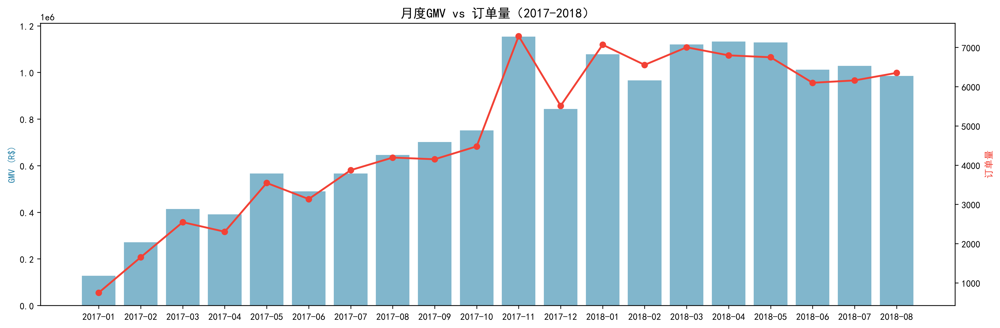
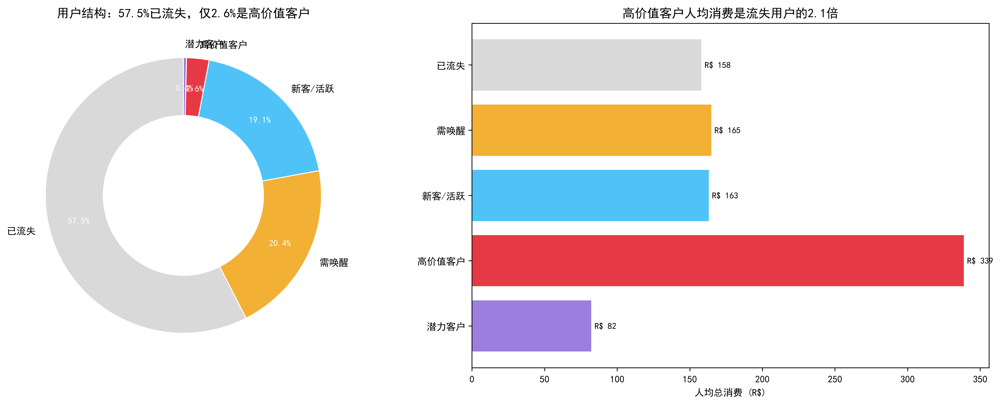
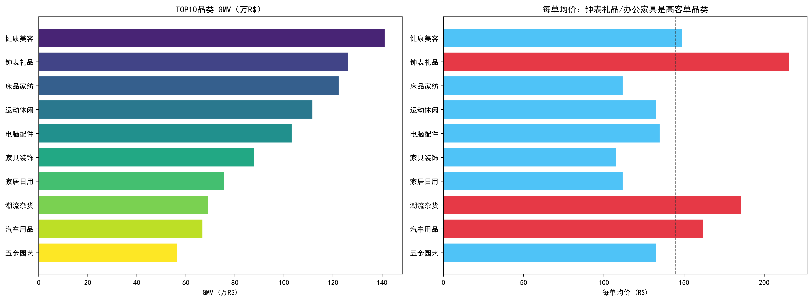
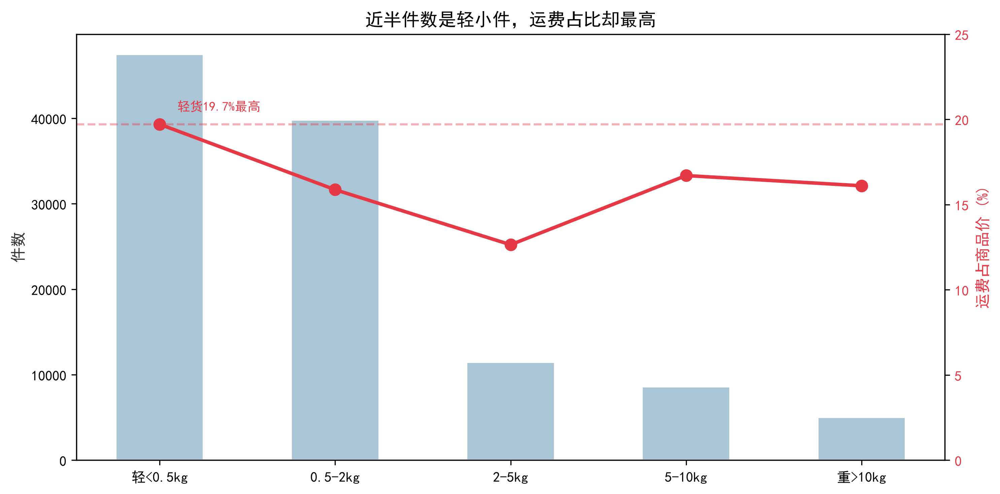

基于Olist平台2016-2018年真实交易数据（约9.9万订单、9.3万用户、73品类）。
25个月GMV从R$12.7万增至R$107.8万，由订单量单一驱动，客单价反降。

图2-1 月度GMV与订单量双轴趋势图
| 用户分层 | 人数 | 占比 | 人均消费 |
|---|---|---|---|
| 高价值 | 2,425 | 2.60% | R$ 342 |
| 潜力 | 15,230 | 16.31% | R$ 185 |
| 需唤醒 | 22,112 | 23.68% | R$ 165 |
| 新客/活跃 | 17,845 | 19.11% | R$ 163 |
| 已流失 | 53,686 | 57.51% | R$ 158 |

图3-1 用户结构环形图 + 人均消费对比
核心结论：仅2.6%的高价值客户贡献约54%的GMV。57.5%用户已流失，复购率仅3%。
TOP5品类占GMV 39.8%，健康美容GMV第一，钟表礼品客单价最高。

图4-1 TOP10品类GMV与每单均价

图5-1 重量分档件数与运费占比双轴图
核心发现：轻小件运费占商品价比例高达19.7%，严重侵蚀利润。
| 优先级 | 方向 | 具体动作 |
|---|---|---|
| P0 | 用户留存 | 针对流失用户启动召回 |
| P0 | 利润保护 | 轻小件设满额包邮或捆绑销售 |
| P1 | 高价值维护 | 专属客服/会员权益 |